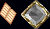
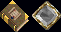
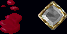
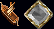
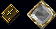
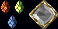
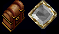
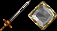
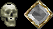
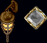

[ 开头输入；表中「说明」为中文译述，命令本身保持英文原文（游戏中需按英文输入）。
以下命令由 ClassicUO 客户端提供（与服务器无关），用于查看物品属性、切换客户端选项等。
| ClassicUO 客户端 ClassicUO Client | |
|---|---|
| 命令 Command | 说明 Description |
| -info | 对准物品可查看其属性 |
| -datetime | 显示服务器日期与时间 |
| -hue | 对准物品可查看其色号（以系统消息显示） |
| -debug | 在游戏世界的图形周围绘制边框 |
| -toggle <选项名> | 通过命令切换 Classic UO 客户端的各项选项 |
| -ignore | 对准某玩家，将其加入客户端忽略名单 |
| -savenecrobar | 保存死灵能力栏（Gump）的当前位置 |
| -savechivbar | 保存骑士能力栏（Gump）的当前位置 |
| -savecodexbar（已失效） | 保存宝典能力栏（Gump）的当前位置（可能已失效） |
以下是 UO Outlands 服务器提供的全部命令，共 323 条，分为 11 个类别。所有命令均以方括号 [ 开头，在游戏聊天框输入即可执行；标注「或」的表示该命令有多个等效写法。

菜单Menus
机制Mechanics
文本显示Text Displays
船舰Ships
宝典Codex
元素Aspect
公会Guild
骑士Chivalry
死灵Necromancy 阵营Factions
测试服务器Test Shard菜单 Menus | |
|---|---|
| 命令 Command | 说明 Description |
| [Help | 打开 Outlands 帮助页面 |
| [Website | 启动 Outlands 官方网站 |
| [Wiki | 启动 Outlands Wiki |
| [Forums 或 [Forum | 启动 Outlands 论坛 |
| [Discord | 启动 Outlands Discord 频道 |
| [HelpRequest 或 [Request | 打开求助页面 |
| [Achievements 或 [Achievement | 打开成就页面 |
| [Societies 或 [Society | 打开协会页面 |
| [AspectMastery 或 [Aspects 或 [Aspect | 打开元素精通（Aspect Mastery）页面 |
| [SkillMastery | 打开技能精通页面 |
| [Customizations 或 [Customization | 打开自定义外观页面 |
| [Titles 或 [Title | 打开称号页面 |
| [TownStruggle 或 [TownStruggles | 打开城镇争夺页面 |
| [Criminality 或 [ConsiderSins | 打开犯罪状态页面 |
| [PlayerStats 或 [Stats | 打开角色属性页面 |
| [DamageTracker 或 [Damage | 开启伤害统计工具 |
| [Atlas | 给予玩家一份地图册（双击使用） |
| [ServerRankings 或 [ServerRank | 打开服务器排行榜页面 |
| [Commands 或 [Command | 打开命令页面 |
| [Donate 或 [Donation | 启动 Outlands 捐赠页面 |
| [Party | 打开队伍菜单 |
| [Survey 或 [HouseSurvey | 启动房屋封锁 / 保全普查机制 |
| [Vendor 或 [Vendors | 打开商人菜单 |
| [VendorSearch | 打开商人搜索网站 |
机制 Mechanics | |
|---|---|
| 命令 Command | 说明 Description |
| [AutoUseSpellScrolls | 切换施法时是否自动使用背包中的法术卷轴 |
| [AutoStealth | 切换在隐藏状态下尝试移动时，是否自动启动潜行 |
| [UnequipOnCast | 切换施法或主动冥想时是否自动卸下装备；若玩家的格挡与魔法技能足以持盾施法，则不会卸下盾牌 |
| [Pouch | 在背包中随机搜寻一个陷阱袋并触发它 |
| [Taunt | 手持双手武器或盾牌时启动嘲讽指令 |
| [Rope | 在背包中随机搜寻一根绳子并触发它 |
| [VetSupplies 或 [VeterinarySupplies | 在背包中随机搜寻一份兽医用品并使用 |
| [SmokeBomb | 在背包中搜寻烟雾弹并触发它 |
| [Disarm | 切换玩家是否尝试施展卸武（Disarm）攻击 |
| [DisarmUntoggleMode | 更改卸武自动取消切换的触发方式 |
| [Hamstring | 切换玩家是否尝试施展断筋（Hamstring）攻击 |
| [HamstringUntoggleMode | 更改断筋自动取消切换的触发方式 |
| [SpellFizzle | 更改是否显示法术施放失败的音效与动画 |
| [Echo 或 [Echoes | 打开回响（Echoes）菜单 |
| [BossResults | 打开 BOSS 战果菜单 |
| [MasteryChain | 双击你当前使用的精通链 |
| [Artisan | 切换穿着工匠元素装备制作时是否获得工匠元素经验（消耗奥术精华） |
| [Fortune | 切换穿着幸运元素装备开锁时是否获得幸运元素经验（消耗奥术精华） |
| [Coord 或 [Coords 或 [Coordinates | 显示玩家当前 X、Y、Z 坐标与经纬度 |
| [PullFollowers | 将 5 格范围内所有随从拉到玩家所在位置 |
| [PreventCriminalHealing | 切换玩家是否被允许治疗灰色生物（并因此变成罪犯） |
| [PreventCriminalLooting | 切换玩家是否被允许搜刮蓝色尸体（并因此变成罪犯） |
| [PreventBandageOverride | 切换是否阻止玩家对自己正在包扎的目标重复包扎 |
| [WarningRavens 或 [WarningRaven | 切换玩家是否会看到谋杀行为的警告乌鸦警报 |
| [WizardrySounds | 启用或禁用来自魔法书升级的巫师音效 |
| [CraftingQueue 或 [CQ | 打开制作队列菜单 |
| [GhostVisible | 允许幽灵在地下城与限制区域中始终看到你（即便当前不在同一队伍 / 公会 / 联盟） |
| [SingleClickPoisonTicks | 切换单击生物时，是否显示该生物身上剩余的中毒跳数 |
| [PlaceTrap | 在当前位置放置一个地面陷阱 |
| [DetonateTrap | 引爆你当前激活的地面陷阱 |
| [Moongate | 尝试使用离玩家最近的月门 |
| [Recall <名称> | 尝试使用背包中符文书 / 符文册里第一个同名符文施放召回术（Recall） |
| [RecallCharge <名称> | 尝试消耗符文书 / 符文册的一次充能来施放召回术 |
| [GateTravel <名称> 或 [Gate <名称> | 尝试使用第一个同名符文施放传送门术（Gate Travel） |
| [GateTravelCharge <名称> 或 [GateCharge <名称> | 尝试消耗符文书 / 符文册的一次充能来施放传送门术 |
文本显示 Text Displays | |
|---|---|
| 命令 Command | 说明 Description |
| [ShowMeleeDamage | 在游戏内以文字显示玩家造成的近战与远程伤害 |
| [ShowSpellDamage | 在游戏内以文字显示玩家造成的法术伤害 |
| [ShowPoisonDamage | 在游戏内以文字显示玩家造成的毒素伤害 |
| [ShowSpecialDamage | 在游戏内以文字显示玩家造成的特殊伤害 |
| [ShowProvocationDamage | 在游戏内以文字显示被玩家激怒的目标所造成的伤害值 |
| [ShowFollowerDamage | 在游戏内以文字显示玩家随从造成的伤害值 |
| [ShowDamageTaken | 在游戏内以文字显示玩家承受的伤害 |
| [ShowFollowerDamageTaken | 在游戏内以文字显示玩家随从承受的伤害 |
| [ShowHealing | 在游戏内以文字显示玩家给出或受到的治疗量 |
| [ShowTamedExperience | 在游戏内以文字显示玩家驯服的生物所获得的经验 |
| [ShowAspectExperience | 在游戏内以文字显示玩家获得的元素经验 |
| [ShowSummonersTomeExperience | 在游戏内以文字显示玩家获得的召唤师之书经验 |
| [ShowStealthSteps | 在游戏内以文字显示玩家剩余的潜行步数 |
| [ShowBardingDurations | 显示生物身上的吟游效果持续时间 |
| [ShowTownStruggleAnnouncements | 显示是否以系统消息通知玩家城镇争夺的发生 |
| [ShowDungeonFlashpointAnnouncements | 显示是否以系统消息通知玩家地下城闪点的发生 |
| [ShowCorpseCreekContestAnnouncements | 显示是否以系统消息通知玩家尸溪竞赛的发生 |
| [ShowShrineCorruptionAnnouncements | 显示是否以系统消息通知玩家神龛腐化的发生 |
| [ShowStygianRiftsAnnouncements | 显示是否以系统消息通知玩家冥河裂隙的发生 |
| [ShowStrangelandsAnnouncements | 显示是否以系统消息通知玩家异境（Strangelands）的发生 |
| [ShowOmniBossAnnouncements | 显示是否以系统消息通知玩家全能 BOSS 事件的发生 |
| [ShowContestedBossAnnouncements | 显示是否以系统消息通知玩家争夺 BOSS 事件的发生 |
船舰 Ships | |
|---|---|
| 命令 Command | 说明 Description |
| [Stop | 停止船只的一切移动 |
| [Forward | 开始持续向前航行 |
| [ForwardLeft | 开始持续向前左航行 |
| [ForwardRight | 开始持续向前右航行 |
| [Left | 开始持续向左横移 |
| [Right | 开始持续向右横移 |
| [Backward | 开始持续向后移动 |
| [BackwardLeft | 开始持续向后左移动 |
| [BackwardRight | 开始持续向后右移动 |
| [TurnLeft | 将船向左转 90 度 |
| [TurnRight | 将船向右转 90 度 |
| [ForwardOne | 将船向前移动一格 |
| [ForwardLeftOne | 将船向前左移动一格 |
| [ForwardRightOne | 将船向前右移动一格 |
| [LeftOne | 将船向左移动一格 |
| [RightOne | 将船向右移动一格 |
| [BackwardOne | 将船向后移动一格 |
| [BackwardLeftOne | 将船向后左移动一格 |
| [BackwardRightOne | 将船向后右移动一格 |
| [Ship 或 [ShipMenu | 打开你当前所乘船只的船舰菜单 |
| [ShipHotbars | 打开你当前所乘船只的船舰快捷栏 |
| [Embark | 登上最近的友方船只 |
| [Disembark | 从当前船只下船 |
| [EmbarkFollowers | 将附近所有随从送上最近的友方船只 |
| [DisembarkFollowers | 让你的随从从当前船只下船 |
| [TargetingMode | 打开当前船只的瞄准模式菜单 |
| [Reload | 为当前船只的火炮重新装填 |
| [Dock | 提示玩家在某个地点或靠泊管理员处停靠船只 |
| [ThrowSelfOverboard | 立刻自我了断，并以幽灵形态出现在你最后一次经月门到访的城镇 |
| [ClearTheDeck | 移除甲板上所有可移动物品，并将其放入船上的垃圾桶 |
| [ReadyCrew | 让船员就位备战 |
| [SendCrewBelow | 让船员撤入下层 |
| [CrewAttack 或 [CrewTarget | 选择船员应攻击的目标；可对准自己的船只以攻击登船者 |
| [CrewStop 或 [CrewHalt | 让船员停止攻击当前目标 |
| [Ram 或 [RamShip | 撞击附近的船只（仅当你的船在 6 个或更多方向上被阻挡时可用） |
| [SendBoardingParty 或 [SendBoarding | 打开派船登舰队窗口 |
| [RecallBoarding 或 [RecallBoardingParty | 召回所有当前活跃的登舰队 |
| [BoardingParty | 打开登舰队窗口，或召回所有当前活跃的登舰队 |
| [Repair | 打开船只修理窗口 |
| [RepairHull | 修理船体 |
| [RepairSails | 修理船帆 |
| [RepairGuns | 修理火炮 |
| [FireCannons | 向指定目标发射船只火炮 |
| [LesserAbility | 启动安装在船只第一「次级能力」槽的能力 |
| [SecondLesserAbility | 启动安装在船只第二「次级能力」槽的能力 |
| [RegularAbility | 启动安装在船只第一「常规能力」槽的能力 |
| [SecondRegularAbility | 启动安装在船只第二「常规能力」槽的能力 |
| [GreaterAbility | 启动安装在船只第一「高级能力」槽的能力 |
| [SecondGreaterAbility | 启动安装在船只第二「高级能力」槽的能力 |
| [AuxiliaryAbility | 启动安装在船只第一「辅助能力」槽的能力 |
| [SecondAuxiliaryAbility | 启动安装在船只第二「辅助能力」槽的能力 |
| [Spyglass | 双击背包中加成数值最高的望远镜 |
| [SpyglassContinuous | 启用或禁用船上望远镜的持续搜索功能 |
宝典 Codex | |
|---|---|
| 命令 Command | 说明 Description |
| [CodexHotbar | 启动宝典快捷栏 |
| [AbilityHotbar | 打开能力快捷栏 |
| [WeaponAbility1 | 启动所装备武器的第 1 项能力 |
| [WeaponAbility2 | 启动所装备武器的第 2 项能力 |
| [WeaponAbility3 | 启动所装备武器的第 3 项能力 |
| [ArcaneStance1 | 启动对应宝典第 1 位的奥术架势（Arcane Stance） |
| [ArcaneStance2 | 启动对应宝典第 2 位的奥术架势（Arcane Stance） |
| [ArcaneStance3 | 启动对应宝典第 3 位的奥术架势（Arcane Stance） |
| [ArcaneStance4 | 启动对应宝典第 4 位的奥术架势（Arcane Stance） |
| [ArcaneStance5 | 启动对应宝典第 5 位的奥术架势（Arcane Stance） |
| [ArcaneFinisher1 | 启动对应宝典第 1 位的奥术终结技（Finisher） |
| [ArcaneFinisher2 | 启动对应宝典第 2 位的奥术终结技（Finisher） |
| [ArcheryAmmunition1 | 启动对应宝典第 1 位的弓箭弹药（Ammunition） |
| [ArcheryAmmunition2 | 启动对应宝典第 2 位的弓箭弹药（Ammunition） |
| [ArcheryAmmunition3 | 启动对应宝典第 3 位的弓箭弹药（Ammunition） |
| [ArcheryAmmunition4 | 启动对应宝典第 4 位的弓箭弹药（Ammunition） |
| [ArcheryAmmunition5 | 启动对应宝典第 5 位的弓箭弹药（Ammunition） |
| [ArcheryFinisher1 | 启动对应宝典第 1 位的弓箭终结技 |
| [ArcheryFinisher2 | 启动对应宝典第 2 位的弓箭终结技 |
| [FencingStance1 | 启动细剑宝典第 1 位的架势 |
| [FencingStance2 | 启动细剑宝典第 2 位的架势 |
| [FencingStance3 | 启动细剑宝典第 3 位的架势 |
| [FencingStance4 | 启动细剑宝典第 4 位的架势 |
| [FencingStance5 | 启动细剑宝典第 5 位的架势 |
| [FencingFinisher1 | 启动细剑宝典第 1 位的终结技 |
| [FencingFinisher2 | 启动细剑宝典第 2 位的终结技 |
| [FishingStance1 | 启动钓鱼宝典第 1 位的架势 |
| [FishingStance2 | 启动钓鱼宝典第 2 位的架势 |
| [FishingStance3 | 启动钓鱼宝典第 3 位的架势 |
| [FishingStance4 | 启动钓鱼宝典第 4 位的架势 |
| [FishingStance5 | 启动钓鱼宝典第 5 位的架势 |
| [FishingFinisher1 | 启动钓鱼宝典第 1 位的终结技 |
| [FishingFinisher2 | 启动钓鱼宝典第 2 位的终结技 |
| [MacingStance1 | 启动锤类宝典第 1 位的架势 |
| [MacingStance2 | 启动锤类宝典第 2 位的架势 |
| [MacingStance3 | 启动锤类宝典第 3 位的架势 |
| [MacingStance4 | 启动锤类宝典第 4 位的架势 |
| [MacingStance5 | 启动锤类宝典第 5 位的架势 |
| [MacingFinisher1 | 启动锤类宝典第 1 位的终结技 |
| [MacingFinisher2 | 启动锤类宝典第 2 位的终结技 |
| [SwordsStance1 | 启动剑术宝典第 1 位的架势 |
| [SwordsStance2 | 启动剑术宝典第 2 位的架势 |
| [SwordsStance3 | 启动剑术宝典第 3 位的架势 |
| [SwordsStance4 | 启动剑术宝典第 4 位的架势 |
| [SwordsStance5 | 启动剑术宝典第 5 位的架势 |
| [SwordsFinisher1 | 启动剑术宝典第 1 位的终结技 |
| [SwordsFinisher2 | 启动剑术宝典第 2 位的终结技 |
| [ShieldsStance1 | 启动格挡宝典第 1 位的架势 |
| [ShieldsStance2 | 启动格挡宝典第 2 位的架势 |
| [ShieldsStance3 | 启动格挡宝典第 3 位的架势 |
| [ShieldsStance4 | 启动格挡宝典第 4 位的架势 |
| [ShieldsStance5 | 启动格挡宝典第 5 位的架势 |
| [ShieldsFinisher1 | 启动格挡宝典第 1 位的终结技 |
| [ShieldsFinisher2 | 启动格挡宝典第 2 位的终结技 |
| [StanceAutoRenewThroughMeditation | 切换主动冥想时，宝典架势是否自动续期 |
| [WrestlingStance1 | 启动徒手宝典第 1 位的架势 |
| [WrestlingStance2 | 启动徒手宝典第 2 位的架势 |
| [WrestlingStance3 | 启动徒手宝典第 3 位的架势 |
| [WrestlingStance4 | 启动徒手宝典第 4 位的架势 |
| [WrestlingStance5 | 启动徒手宝典第 5 位的架势 |
| [WrestlingFinisher1 | 启动徒手宝典第 1 位的终结技 |
| [WrestlingFinisher2 | 启动徒手宝典第 2 位的终结技 |
| [Stance1AutoRenew | 切换所持武器第 1 位宝典架势的自动续期处理方式 |
| [Stance2AutoRenew | 切换所持武器第 2 位宝典架势的自动续期处理方式 |
| [Stance3AutoRenew | 切换所持武器第 3 位宝典架势的自动续期处理方式 |
| [Stance4AutoRenew | 切换所持武器第 4 位宝典架势的自动续期处理方式 |
| [Stance5AutoRenew | 切换所持武器第 5 位宝典架势的自动续期处理方式 |
元素 Aspect | |
|---|---|
| 命令 Command | 说明 Description |
| [AspectWeapon 元素名 | 为所装备的武器激活某个元素。例：[AspectWeapon Fire |
| [AspectWeapon 元素名 等级 | 为所装备的武器激活指定等级的元素。例：[AspectWeapon Fire 10 |
| [AspectSpellbook 元素名 | 为所装备的法术书激活某个元素。例：[AspectSpellbook Fire |
| [AspectSpellbook 元素名 等级 | 为所装备的法术书激活指定等级的元素。例：[AspectSpellbook Fire 10 |
| [AspectArmor 元素名 | 为所装备的护甲激活某个元素。例：[AspectArmor Fire |
| [AspectArmor 元素名 等级 | 为所装备的护甲激活指定等级的元素。例：[AspectArmor Fire 10 |
| [LowerWeaponAspect | 临时降低武器元素等级 |
| [RaiseWeaponAspect | 临时提升武器元素等级 |
| [LowerSpellAspect | 临时降低法术书元素等级 |
| [RaiseSpellAspect | 临时提升法术书元素等级 |
| [LowerArmorAspect | 临时降低护甲元素等级 |
| [RaiseArmorAspect | 临时提升护甲元素等级 |
公会 Guild | |
|---|---|
| 命令 Command | 说明 Description |
| [Guild | 启动公会页面 |
| [Resign | 退出当前公会 |
| [Overview | 打开公会页面的「总览」标签 |
| [Members | 打开公会页面的「成员」标签 |
| [Battle | 打开公会页面的「战斗」标签 |
| [TradeCaravan | 打开公会页面的「贸易商队」标签 |
| [Faction 或 [Factions | 打开公会页面的「阵营」标签 |
| [Candidates | 打开公会页面的「候选者」标签 |
| [Diplomacy | 打开公会页面的「外交」标签 |
| [Dungeons | 打开公会页面的「地下城」标签 |
| [Treasury | 打开公会页面的「金库」标签 |
| [BloodFeuds | 打开公会页面的「血仇」标签 |
| [Rewards | 打开公会页面的「奖励」标签 |
骑士 Chivalry | |
|---|---|
| 命令 Command | 说明 Description |
| [Chivalry | 启动骑士菜单 |
| [ChivalryHotbar | 启动骑士快捷栏 |
| [ChivalryShowSymbolMessages | 切换是否显示圣徽数量的系统消息 |
| [RemoveCurse | 启动「移除诅咒」骑士能力 |
| [DispelEvil | 启动「驱散邪恶」骑士能力 |
| [CleanseByFire | 启动「烈火净化」骑士能力 |
| [ConsecrateWeapon | 启动「祝圣武器」骑士能力 |
| [CloseWounds | 启动「闭合伤口」骑士能力 |
| [EnemyofOne | 启动「指定宿敌」骑士能力 |
| [NobleSacrifice | 启动「崇高牺牲」骑士能力 |
| [DivineFury | 启动「神圣之怒」骑士能力 |
| [SacredJourney | 启动「神圣旅程」骑士能力 |
| [HolyLight | 启动「圣光」骑士能力 |
| [Chivalry1 | 启动第 1 位的骑士能力 |
| [Chivalry2 | 启动第 2 位的骑士能力 |
| [Chivalry3 | 启动第 3 位的骑士能力 |
| [Chivalry4 | 启动第 4 位的骑士能力 |
| [Chivalry5 | 启动第 5 位的骑士能力 |
| [Chivalry6 | 启动第 6 位的骑士能力 |
| [Chivalry7 | 启动第 7 位的骑士能力 |
| [Chivalry8 | 启动第 8 位的骑士能力 |
| [Chivalry9 | 启动第 9 位的骑士能力 |
| [Chivalry10 | 启动第 10 位的骑士能力 |
| [RemoveCurseAutoRenew | 启动「移除诅咒」骑士能力的自动续期 |
| [DispelEvilAutoRenew | 启动「驱散邪恶」骑士能力的自动续期 |
| [CleanseByFireAutoRenew | 启动「烈火净化」骑士能力的自动续期 |
| [ConsecrateWeaponAutoRenew | 启动「祝圣武器」骑士能力的自动续期 |
| [CloseWoundsAutoRenew | 启动「闭合伤口」骑士能力的自动续期 |
| [EnemyofOneAutoRenew | 启动「指定宿敌」骑士能力的自动续期 |
| [NobleSacrificeAutoRenew | 启动「崇高牺牲」骑士能力的自动续期 |
| [DivineFuryAutoRenew | 启动「神圣之怒」骑士能力的自动续期 |
| [SacredJourneyAutoRenew | 启动「神圣旅程」骑士能力的自动续期 |
| [HolyLightAutoRenew | 启动「圣光」骑士能力的自动续期 |
| [Chivalry1AutoRenew | 启动第 1 位骑士能力的自动续期 |
| [Chivalry2AutoRenew | 启动第 2 位骑士能力的自动续期 |
| [Chivalry3AutoRenew | 启动第 3 位骑士能力的自动续期 |
| [Chivalry4AutoRenew | 启动第 4 位骑士能力的自动续期 |
| [Chivalry5AutoRenew | 启动第 5 位骑士能力的自动续期 |
| [Chivalry6AutoRenew | 启动第 6 位骑士能力的自动续期 |
| [Chivalry7AutoRenew | 启动第 7 位骑士能力的自动续期 |
| [Chivalry8AutoRenew | 启动第 8 位骑士能力的自动续期 |
| [Chivalry9AutoRenew | 启动第 9 位骑士能力的自动续期 |
| [Chivalry10AutoRenew | 启动第 10 位骑士能力的自动续期 |
死灵 Necromancy | |
|---|---|
| 命令 Command | 说明 Description |
| [Necromancy | 启动死灵菜单 |
| [NecromancyHotBar | 启动死灵快捷栏 |
| [NecromancyShowSymbolMessages | 切换是否显示死灵符记数量的系统消息 |
| [NecromancyAutoRenewThroughMeditation | 切换主动冥想时，死灵能力是否自动续期 |
| [EvilOmen | 启动「凶兆」死灵能力 |
| [PoisonStrike | 启动「淬毒打击」死灵能力 |
| [VampiricEmbrace | 启动「吸血之拥」死灵能力 |
| [CorpseSkin | 启动「腐尸皮」死灵能力 |
| [Wither | 启动「枯萎」死灵能力 |
| [MindRot | 启动「心智腐蚀」死灵能力 |
| [BloodOath | 启动「血誓」死灵能力 |
| [PainSpike | 启动「痛苦尖刺」死灵能力 |
| [Strangle | 启动「扼杀」死灵能力 |
| [VengefulSpirit | 启动「复仇之灵」死灵能力 |
| [Necromancy1 | 启动第 1 位的死灵能力 |
| [Necromancy2 | 启动第 2 位的死灵能力 |
| [Necromancy3 | 启动第 3 位的死灵能力 |
| [Necromancy4 | 启动第 4 位的死灵能力 |
| [Necromancy5 | 启动第 5 位的死灵能力 |
| [Necromancy6 | 启动第 6 位的死灵能力 |
| [Necromancy7 | 启动第 7 位的死灵能力 |
| [Necromancy8 | 启动第 8 位的死灵能力 |
| [Necromancy9 | 启动第 9 位的死灵能力 |
| [Necromancy10 | 启动第 10 位的死灵能力 |
| [EvilOmenAutoRenew | 启动「凶兆」死灵能力的自动续期 |
| [PoisonStrikeAutoRenew | 启动「淬毒打击」死灵能力的自动续期 |
| [VampiricEmbraceAutoRenew | 启动「吸血之拥」死灵能力的自动续期 |
| [CorpseSkinAutoRenew | 启动「腐尸皮」死灵能力的自动续期 |
| [WitherAutoRenew | 启动「枯萎」死灵能力的自动续期 |
| [MindRotAutoRenew | 启动「心智腐蚀」死灵能力的自动续期 |
| [BloodOathAutoRenew | 启动「血誓」死灵能力的自动续期 |
| [PainSpikeAutoRenew | 启动「痛苦尖刺」死灵能力的自动续期 |
| [StrangleAutoRenew | 启动「扼杀」死灵能力的自动续期 |
| [VengefulSpiritAutoRenew | 启动「复仇之灵」死灵能力的自动续期 |
| [Necromancy1AutoRenew | 启动第 1 位死灵能力的自动续期 |
| [Necromancy2AutoRenew | 启动第 2 位死灵能力的自动续期 |
| [Necromancy3AutoRenew | 启动第 3 位死灵能力的自动续期 |
| [Necromancy4AutoRenew | 启动第 4 位死灵能力的自动续期 |
| [Necromancy5AutoRenew | 启动第 5 位死灵能力的自动续期 |
| [Necromancy6AutoRenew | 启动第 6 位死灵能力的自动续期 |
| [Necromancy7AutoRenew | 启动第 7 位死灵能力的自动续期 |
| [Necromancy8AutoRenew | 启动第 8 位死灵能力的自动续期 |
| [Necromancy9AutoRenew | 启动第 9 位死灵能力的自动续期 |
| [Necromancy10AutoRenew | 启动第 10 位死灵能力的自动续期 |
阵营 Factions | |
|---|---|
| 命令 Command | 说明 Description |
| [Faction 或 [Factions | 打开公会页面的「阵营」标签 |
| [FactionHotbar | 启动阵营快捷栏 |
| [FactionMap | 启动阵营地图 |
| [ShowFactionKills 或 [Punkte | 显示玩家通过击杀玩家所获得的赛季与生涯阵营积分 |
| [PreventFactionHealing | 切换（未加入阵营的）玩家是否可治疗阵营玩家，并因此被临时标记为阵营可攻击目标 |
| [ShowFactionGlobalAnnouncements | 显示是否以系统消息通知玩家阵营全局活动 |
| [ShowFactionCastleAnnouncements | 显示是否以系统消息通知玩家阵营城堡活动 |
| [ShowFactionFlagAnnouncements | 显示是否以系统消息通知玩家阵营旗帜活动 |
| [ShowFactionWaypostAnnouncements | 显示是否以系统消息通知玩家阵营驿站活动 |
| [ShowFactionWaypostRegionMessages | 显示玩家进入阵营驿站区域时是否会收到通知 |
测试服务器 Test Shard | |
|---|---|
| 命令 Command | 说明 Description |
| 官方页面此章节暂无内容 No entries on the official wiki | |